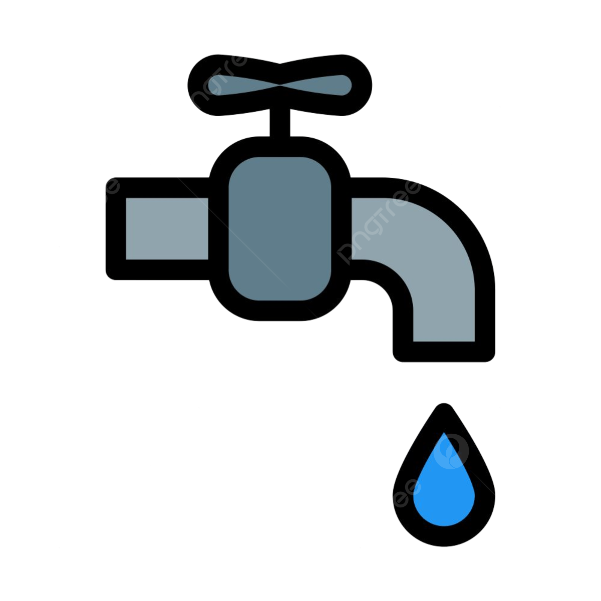

Torneira aberta, futuro seco
Por: Ana Karoline, Hellane e Ester
Boas-vindas ao Blog, aqui iremos saber sobre o conteúdo envolvendo essa água que nós desperdiçamos com mais frequência do que nós imaginamos
"Pequenas atitudes contra o grande desperdício"

Por: Ana Karoline, Hellane e Ester
Boas-vindas ao Blog, aqui iremos saber sobre o conteúdo envolvendo essa água que nós desperdiçamos com mais frequência do que nós imaginamos